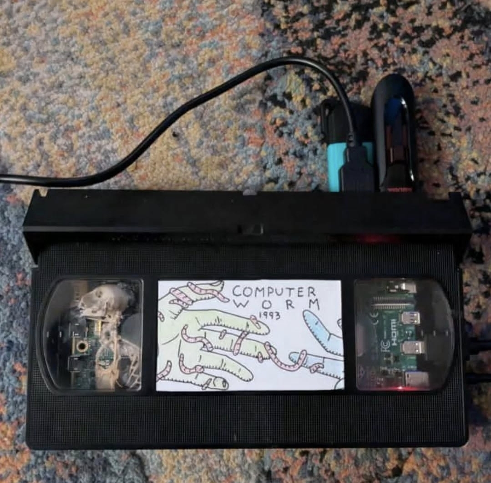
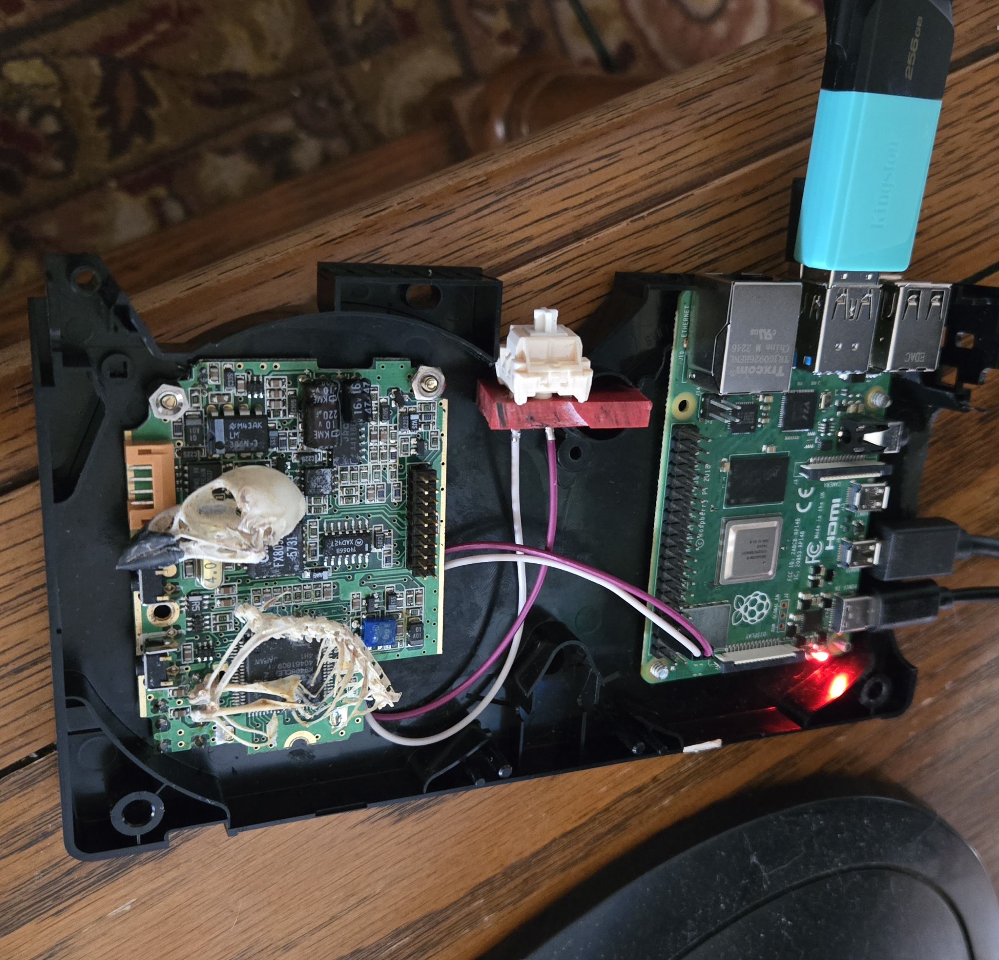

VHS Retro Gaming Rig

My retro gaming rig consists of a Raspberry Pi 4 single board computer loaded out with retropie and emulationstation, which I have crammed into [its atually quite spacious] an old VHS cassette tape. The tape itself is one I accidentally ruined when testing out the CRT tv I used for Adzukis vivarium. It chewed up the tape pretty good, but it makes a perfect case for the pi. Thats about all there is to it hardware wise, asides from a keyboard switch I wired to the GPIO pins that functions as an on/off switch. The left half of the cassette is the most interesting, with the bird skeleton I found in the old decommisioned water treatment plant. Probably was in there for a decade before I found it. I attatched it to the circuit board of a two way radio I found in the electronic waste bin at the local waste transfer site because I just think it looks neat :)

Software wise, asides from retropie and some customizations I made with the emulators, the biggest thing is alll the custom artwork I made. It was all done in Krita, with lots also done just pencil crayon and paper I took a picture of and edited into the .XML files, as well as some other changes in the xmls for font sizes and image sizes and positiong, etc. Each system has its own unique artwork, as well as a loading screen when launching a games ROM files.
Additionally I animated two short .mp4 videos to play during system boot up, as it takes a while to initialize and it gives the user something to look at while it does. I'll post my system art below but as for loading animations I'm not sure how to embed videos inside a webpage yet and I'm not sure I really care enough to learn lol. But you can find one of them at least on my instagram. I decided to emulate no later of a sytem than the N64 console, as the RPi 4 uses an ARM processor and begins to struggle with anything more modern. I've heard of people overclocking there pis to get gamecube running but I was happy with what I have here. I'm considering building another rig for gamecube,wii,nintendo DS, original xbox and ps2, and some early PC games as well. But it makes more sense to run that on an actual full computer to be honest.
| Console | # Games |
|---|---|
| NES | 706 |
| Super NES | 677 |
| Gameboy | 88 |
| Gameboy Colour | 680 |
| Gameboy Advanced | 896 |
| Tamagotchi | 1 |
| Playstation | 21 |
| N64 | 333 |
| Colecovision | 316 |
| Dreamcast | 125 |
| Sega Genesis | 970 |
| Television | mostly shows, some movies |
| Settings | system configuration, etc |